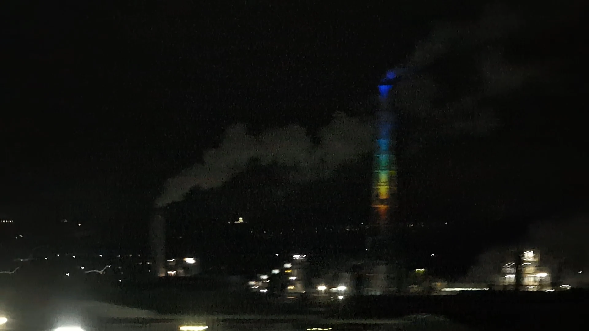
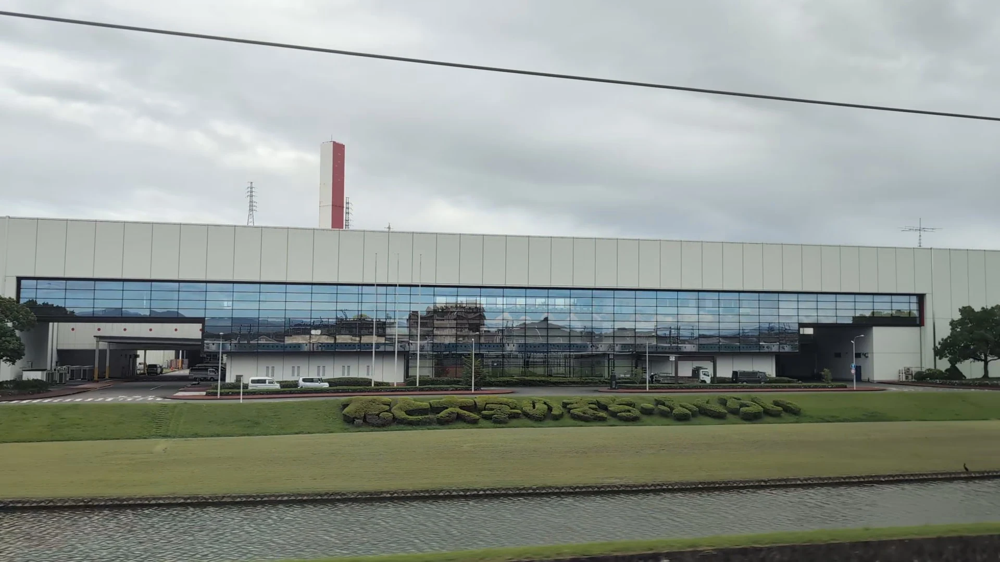
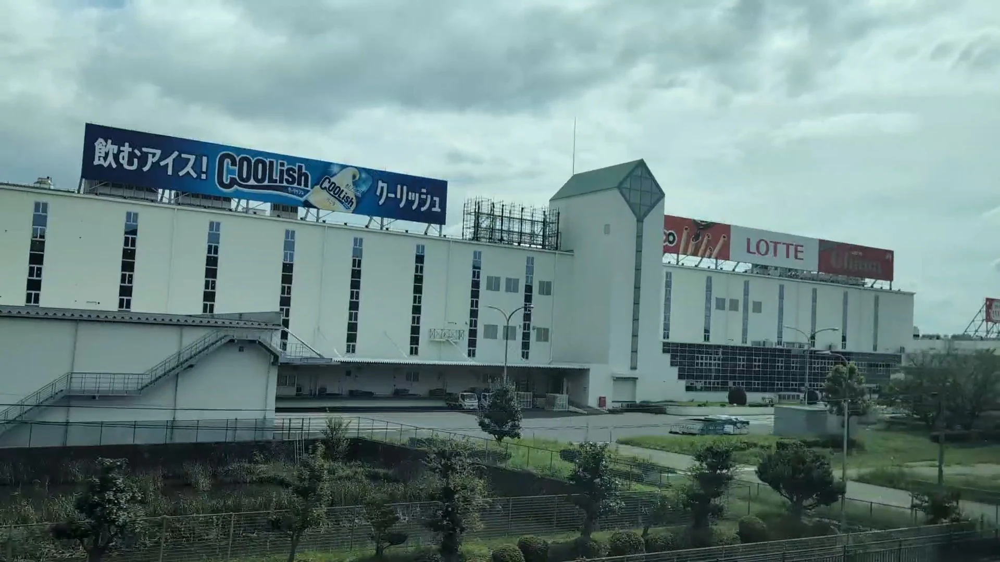

Explorar las fotos
Café, dulces y cosméticos: descubre las fábricas que se ven desde el Tōkaidō Shinkansen con fotos y una guía de los asientos A y E.
Shin-Yokohama → Odawara
Kamonomiya, en Odawara

Asientos EA la derecha en el sentido de la marcha Meiji Seika Pharmatech
Letras rojas en la azotea
Justo al este del Sakawa se ve el nombre en rojo sobre un edificio de color crema. La planta de Kamonomiya, en Odawara, fabrica comprimidos y medicamentos inyectables.
Mishima → Shin-Fuji
A los pies del Fuji

Asientos EA la derecha en el sentido de la marcha UCC · Fábrica de Fuji
Una torre de café y el monte Fuji
Busca «UCC COFFEE FUJI» en la torre blanca. Tras esta fábrica de café tostado aparece el monte Fuji.

Asientos EA la derecha en el sentido de la marcha Nippon Paper · Fábrica de Fuji, área de Fuji
Papel para cada día, al pie del Fuji
Las chimeneas rojas y blancas y el monte Fuji te ayudan a localizarla. Dentro del recinto, la fábrica Shin-Fuji de Crecia Kasuga produce papel higiénico y otros papeles de uso doméstico.

Asientos EA la derecha en el sentido de la marcha Koa Kogyo · Fábrica de la sede central
Una chimenea con colores de arcoíris
Aquí se fabrica papel para cartón ondulado, entre otros productos. La iluminación «Nijien» de la foto se programó solo del 11 al 23 de noviembre de 2026; no forma parte del paisaje habitual.
Shizuoka → Kakegawa
Yaizu y el río Ōi

Asientos AA la izquierda en el sentido de la marcha Sapporo Beer · Fábrica de Shizuoka
La cerveza de Shizuoka nace en Yaizu
Busca las filas de depósitos plateados y el símbolo de la estrella. De esta fábrica de Yaizu sale también Shizuoka Bakushu, una cerveza que solo se vende en Shizuoka.

Asientos EA la derecha en el sentido de la marcha Kibun Foods · Fábrica de Shizuoka
El «＋S» del envase de kamaboko
El emblema de Kibun asoma sobre una sucesión de tejados rojos. Esta fábrica elabora kamaboko y chikuwa, productos de pasta de pescado. El código de fabricación «＋S» de sus envases identifica este lugar.
Junto al puente ferroviario del río Ōi. Por la ventana del lado opuesto se ven los edificios de Ajinomoto.

Asientos EA la derecha en el sentido de la marcha Nestlé Japón · Fábrica de Shimada
El nombre del café, al otro lado del río
Cuando se abra el amplio cauce, mira hacia el pie de las montañas. La fábrica de Shimada produce café y aprovecha los posos de la extracción como combustible para sus calderas.
Mira río arriba desde el puente del Ōi. La fábrica está a unos 1,3 km de las vías.

Asientos AA la izquierda en el sentido de la marcha Ajinomoto Foods y Ajinomoto Bakery
Gachas de arroz y pan por hornear
Las letras «Knorr» aparecen en una pared blanca de perfil curvo. En esta misma dirección están la fábrica de Shizuoka de Ajinomoto Foods, que elabora okayu —gachas de arroz—, y el centro de Shimada de Ajinomoto Bakery, que produce masa de pan congelada.
Cerca del puente del río Ōi, al otro lado de las vías respecto a la torre roja de Kibun.
Fuentes
- Ajinomoto Foods | Productos de la fábrica de Shizuoka
- Ajinomoto Bakery | Producción de masa de pan congelada
- Ajinomoto Bakery | Dirección del centro de Shimada
La foto permite identificar el exterior del recinto. No se ha confirmado qué líneas de producción corresponden a cada edificio.
Kakegawa → Hamamatsu
Kakegawa, Fukuroi y Hamamatsu

Asientos AA la izquierda en el sentido de la marcha Shiseido · Fábrica de Kakegawa
Maquillaje bajo un gran techo blanco
Un gran techo blanco se extiende junto a las vías. Esta fábrica produce maquillaje; el techo protege los productos del viento, la lluvia y el sol durante su expedición.

Asientos AA la izquierda en el sentido de la marcha Marudai Food · Fábrica de Shizuoka
«＋P»: la pista de Kakegawa
Sobre los árboles asoma el emblema rojo de Marudai Food, con una fila de ventanas redondas debajo. En 2023, la empresa presentó sus salchichas Long Wiener fabricadas aquí. El código de esta fábrica en los envases es «＋P».
A unos 4 km de Kakegawa en dirección a Hamamatsu. Hacia Shin-Osaka, después de Shiseido.

Asientos AA la izquierda en el sentido de la marcha POLA Chemical Industries · Fábrica de Fukuroi
Tu propio tren reflejado en el cristal
Fíjate en la larga fachada acristalada de esta fábrica de cosméticos. Si la luz acompaña, podrás ver reflejado el Shinkansen en el que viajas.

Asientos AA la izquierda en el sentido de la marcha Otsuka Pharmaceutical · Fábrica de Fukuroi
La pared azul de Pocari Sweat
Sobre el verde del césped destaca una gran pared azul con «POCARI SWEAT». Es fácil reconocer esta fábrica de bebidas, donde se elabora Pocari Sweat, entre otras.

Asientos EA la derecha en el sentido de la marcha Nitto Kogyo · Fábrica de Kakegawa
Cajas que protegen la electricidad
Busca «NITO 日東工業» en la pared blanca. Los pequeños armarios que se fabrican aquí sirven para alojar y proteger equipos eléctricos.

Asientos EA la derecha en el sentido de la marcha Unicharm Products · Fábrica de Shizuoka
El emblema también está en el jardín
Sigue las ondas amarillas y naranjas de la fachada blanca: el jardín también luce un gran emblema. Aquí se fabrican pañales para bebés y adultos, productos menstruales y toallitas de limpieza, entre otros artículos.
A unos 4 km de Kakegawa hacia Hamamatsu. Hacia Shin-Osaka, después de Nitto Kogyo.

Asientos EA la derecha en el sentido de la marcha House Foods · Fábrica de Shizuoka
Del curry a los aperitivos
Busca la torre con el rótulo «ハウス食品». Esta fábrica de Fukuroi produce Vermont Curry, Hokkaido Stew y los conos de maíz Tongari Corn.

Asientos EA la derecha en el sentido de la marcha Yamaha Motor · Fábrica de Fukuroi Minami
De las vías a los mares del mundo
Letras rojas de YAMAHA y una fachada de lamas blancas verticales. Aquí se fabrican motores fueraborda, los que se instalan en la popa de las embarcaciones.

Asientos EA la derecha en el sentido de la marcha Teibow · Sede y fábrica
Del fieltro de sombrero a la punta del rotulador
El rótulo verde «TEIBOW» marca la sede y fábrica de una empresa que pasó de trabajar el fieltro para sombreros a fabricar puntas de rotulador.
Fuentes
No se ha confirmado qué tipos de productos se fabrican actualmente en esta sede.
Hamamatsu → Toyohashi
Takatsuka, lago Hamana y Toyohashi

Asientos AA la izquierda en el sentido de la marcha Suzuki · Sede central de Takatsuka
Una S roja sobre los tejados
Por encima de los tejados asoma la S roja que quizá reconozcas de los coches. Es la sede de Suzuki. La producción de motores de motocicleta que antes se hacía en Takatsuka se trasladó a Miyakoda, en Hamamatsu, en 2018.
Entre la estación de Hamamatsu y el lago Hamana, cerca de la estación JR Takatsuka. Hacia Shin-Osaka se ve antes de cruzar el lago; hacia Tokio, después.

Asientos AA la izquierda en el sentido de la marcha Sinfonia Technology · Fábrica de Toyohashi
Mover silicio con delicadeza
Tras el césped, una larga pared muestra «豊橋製作所» y «創業1917年»: fábrica de Toyohashi y fundada en 1917. Es una de las principales plantas de equipos que transportan finas láminas de silicio sin contaminarlas durante la fabricación de semiconductores, como los de los móviles.
En Mitsuya-cho, Toyohashi, al lado de Futagawa que mira hacia Tokio. Hacia Shin-Osaka, antes de llegar a Toyohashi; hacia Tokio, después de salir.
Fuentes
- Sinfonia | Equipos de transporte para semiconductores y fábrica de Toyohashi
- Sinfonia | La fábrica de Toyohashi y el Shinkansen
- Sogo Hodo | El cartel de unos 70 m de Sasashima, Nagoya
- Chuden Clavis | Anuncio en la fachada este de Sasashima
El mismo nombre aparece a unos 800 m al sur de la estación de Nagoya. Allí es un anuncio de unos 70 m en la fachada del centro comercial Market Square Sasashima.
También hay un cartel en Nagoya

Mikawa-Anjo → Nagoya
Anjo

Asientos EA la derecha en el sentido de la marcha Yamazaki Baking · Fábrica de Anjo
El pan de cada mañana, junto a las vías
El símbolo del sol y las letras rojas «ヤマザキ» pasan muy cerca. Esta fábrica, próxima a Mikawa-Anjo, produce pan y dulces japoneses y occidentales.

Asientos EA la derecha en el sentido de la marcha Nichiban · Fábrica de Anjo
Un cartel conocido, una función que cambia
La publicidad de «セロテープ» en rojo, blanco y azul sirve de referencia. Esta fábrica de cintas adhesivas también amplía su papel en productos de uso sanitario.
Fuentes
- Nichiban | Informe de valores de 2026 (pág. 37)
- Nichiban | Explicación de la reorganización de la producción (2025)
- Nichiban | Publicidad en la fachada visible desde el tren
La información de instalaciones de 2026 enumera cintas adhesivas de uso sanitario, de papel y de plástico. Según una explicación oficial de 2025, la producción relacionada con Cellotape se concentra en Saitama. El cartel no demuestra que Cellotape se siga fabricando en Anjo.
Nagoya → Gifu-Hashima
Kiyosu
Maibara → Kioto
Maibara, Hikone y Ōmi

Asientos AA la izquierda en el sentido de la marcha Yanmar · Instituto Central de Investigación
Un gran reloj al salir de Maibara
Un edificio alargado, las letras rojas «YANMAR» y un gran reloj. En este instituto de Maibara se investigan tecnologías para reducir el consumo de los motores y aprovechar energías alternativas.
Hacia Shin-Osaka, poco después de salir de Maibara: un viajero lo observó aproximadamente al minuto en un Kodama. Hacia Tokio, antes de llegar a Maibara.

Asientos EA la derecha en el sentido de la marcha Fujitec · Big Wing
Donde nacen los viajes en ascensor
La alta torre sirve para investigar y probar ascensores. En el mismo recinto hay una fábrica de modelos estándar y a medida: aquí se reúnen investigación y producción.

Asientos AA la izquierda en el sentido de la marcha Joyson Safety Systems, planta de Echigawa
JOYSON sobre la entrada
Cerca del Echi, el nombre JOYSON corona una entrada acristalada. Aquí se desarrollan y fabrican piezas para automóviles y sillas de seguridad infantiles.

Asientos AA la izquierda en el sentido de la marcha Lotte · Fábrica de Shiga
Dulces y helados a lo grande
Una sucesión de enormes carteles de dulces y helados. Aquí se elaboran Yukimi Daifuku, Coolish y Toppo, entre otros productos, aunque no todos los que aparecen en los carteles se fabrican en esta planta.

Asientos AA la izquierda en el sentido de la marcha Qualitech Pharma, planta de Shiga
Letras azules junto a la vía
Cerca del Yasu, unas letras japonesas azules recorren una pared clara. La planta de Mikami, en la ciudad de Yasu, fabrica medicamentos por encargo de otras empresas.

Asientos AA la izquierda en el sentido de la marcha Nissin Foods · Fábrica de Shiga
El arroz instantáneo también sale de aquí
Busca el edificio con «日清食品» en Ritto. También produce arroz instantáneo en vaso, como Curry Meshi. Es una fábrica distinta de la planta Kansai, situada al otro lado de las vías, del lado E.
Kioto → Shin-Osaka
Yamazaki

Asientos EA la derecha en el sentido de la marcha Suntory · Destilería Yamazaki
El hogar del whisky al pie de la montaña
Busca «山崎» entre los tejados y los cables. Esta destilería elabora el whisky de malta que se utiliza en el single malt Yamazaki.
¿Qué lado de la ventana?
En clase estándar, hacia Shin-Osaka los asientos A quedan a la izquierda y los E a la derecha. Hacia Tokio, al revés. En Green Car, el lado D corresponde al lado E de clase estándar.
Sobre esta guía
Las funciones y los productos de cada instalación se han contrastado con fuentes consultadas en noviembre de 2026, principalmente en japonés. Dentro de un mismo tramo, los lugares no siguen necesariamente el orden exacto de paso. Las distancias son aproximadas.
Fotografías: michikusa. Tren de la foto de POLA: © Disney.
Kei Kurihara, «東海道新幹線の車窓は、こんなに面白い！» (2016, original en japonés)